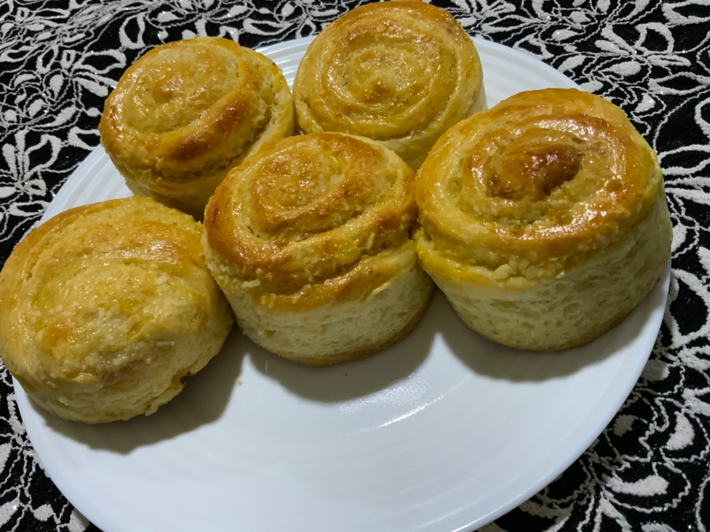
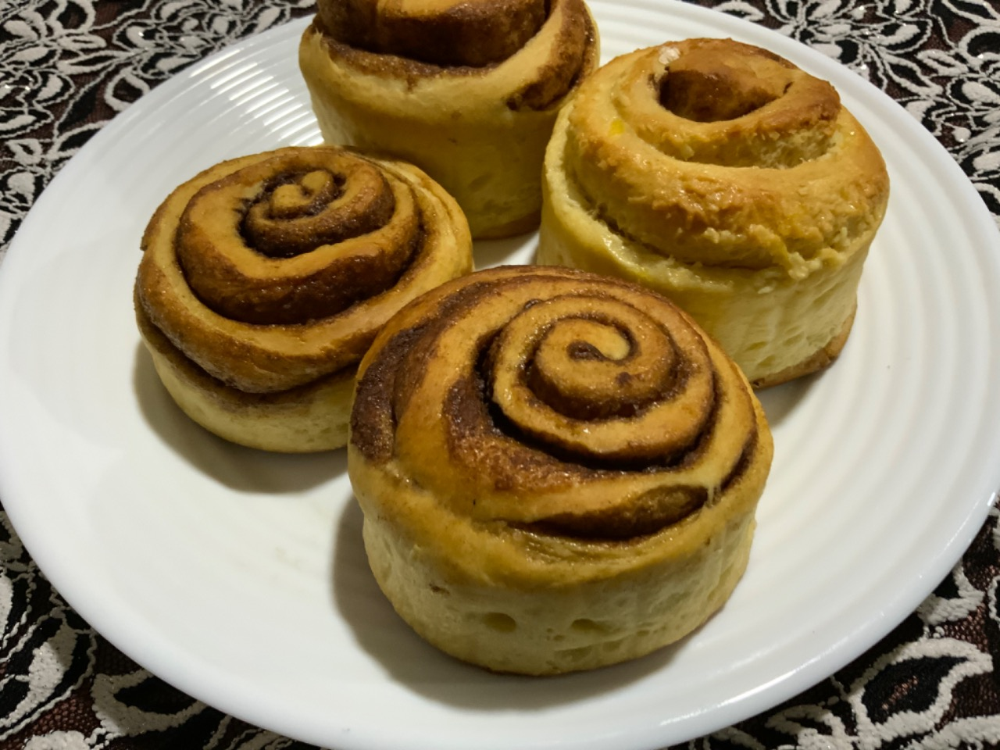
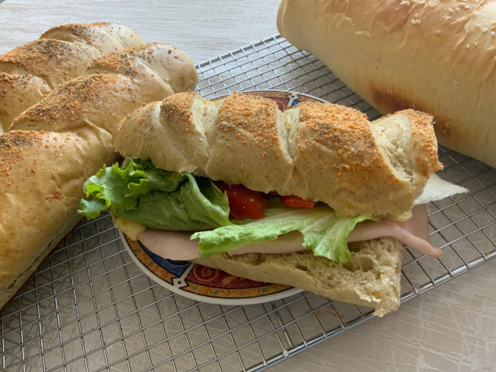
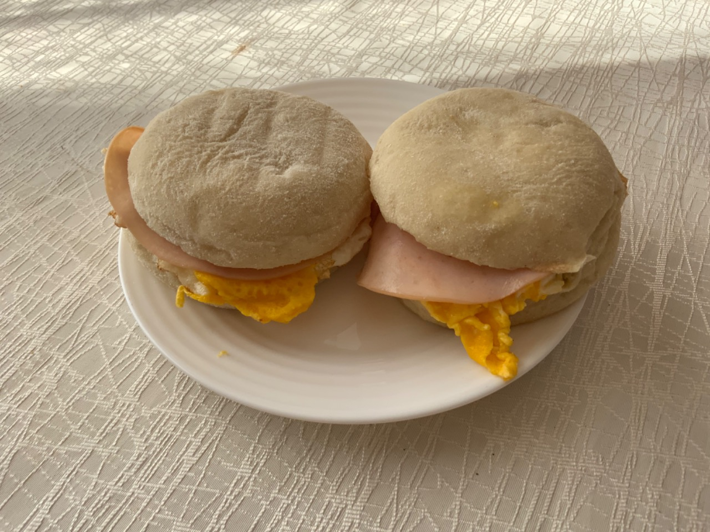
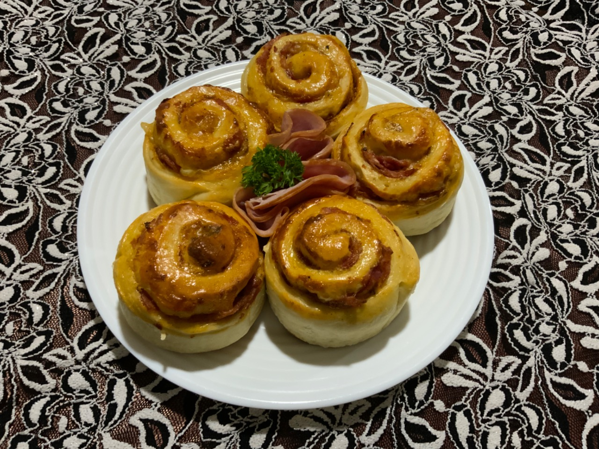

Ana's Bakery
Back
|
Home
|
Next
Pan Dulce
Tipos de diferentes panes dulces
Rollo de piña con coco

Rollo de canela

Rollo de canela con glaceado
Pan Salado
Algunos panes salados
Pan de sandwich

Muffin de huevo con jamon

Rollo de jamón
